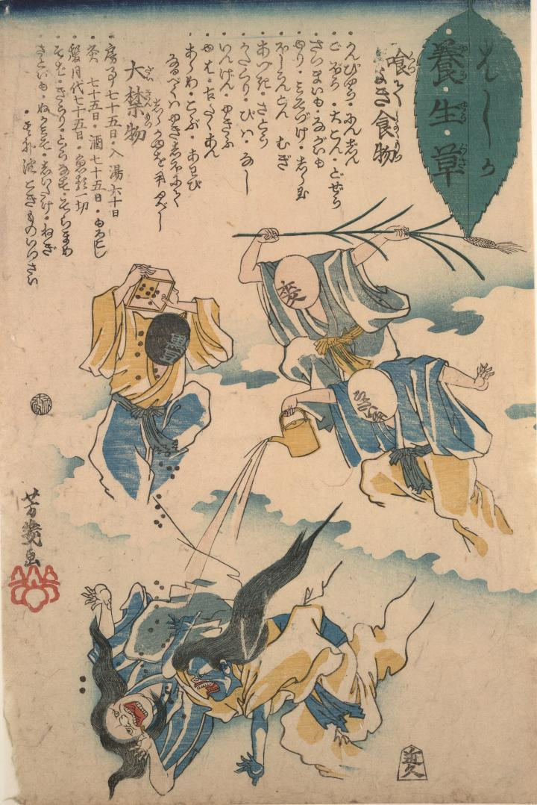

麻疹に良いとされている黒豆、麦、解熱剤のうさい角という文字が書かれた顔の化物が、2体の麻疹の神を退治しようとしている。
著作者：落合芳幾／出典：親書誌：U426_nichibunken_0010：はしか養生草；ハシカヨウジョウグサ／日付：2006／資源識別子：U426_nichibunken_0010_0001_0000
Copyright (c)2010- International Research Center for Japanese Studies, Kyoto, Japan. All rights reserved.